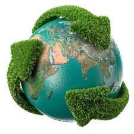

Bienvenido a Planeta Sostenible

Damos la bienvenida a todos aquellos apasionados por la protección y preservación del medio ambiente. En Planeta Sostenible, creemos en el poder de la acción colectiva para crear un mundo más verde y equilibrado.
Nuestra misión es simple pero poderosa: trabajar juntos para construir un futuro sostenible para las generaciones venideras. A través de iniciativas innovadoras, educación ambiental y colaboraciones estratégicas, estamos comprometidos a hacer una diferencia palpable en nuestro planeta.
Objetivos:
- Consevación de la Biodiversidad:Trabajamos incansablemente para proteger y restaurar la diversidad de vida en la Tierra, desde los ecosistemas más frágiles hasta las especies en peligro de extinción.
- Promoción de Prácticas Sostenibles: Fomentamos la adopción de prácticas ecológicas en comunidades, empresas y hogares. Juntos, podemos reducir nuestra huella ambiental y promover un estilo de vida más sostenible.
- Educación y Conciencia Ambiental:Creemos en el poder de la educación para cambiar el mundo. Ofrecemos programas educativos, talleres y recursos para aumentar la conciencia sobre la importancia de cuidar nuestro entorno.
- Fomento de la Innovación Verde:Apoyamos e impulsamos la investigación y el desarrollo de tecnologías y soluciones ecológicas que contribuyan a la protección y regeneración del medio ambiente.